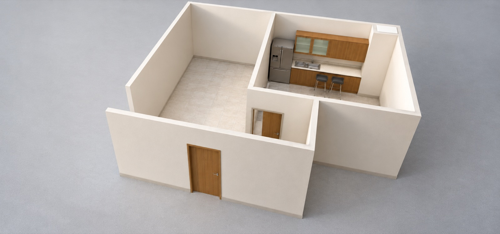
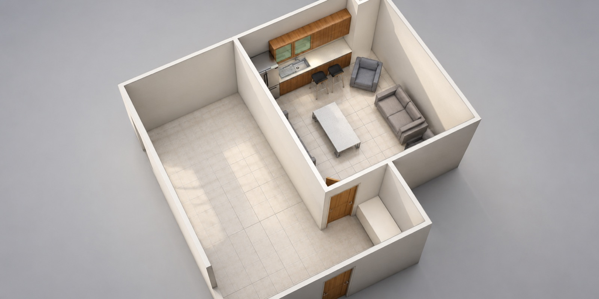
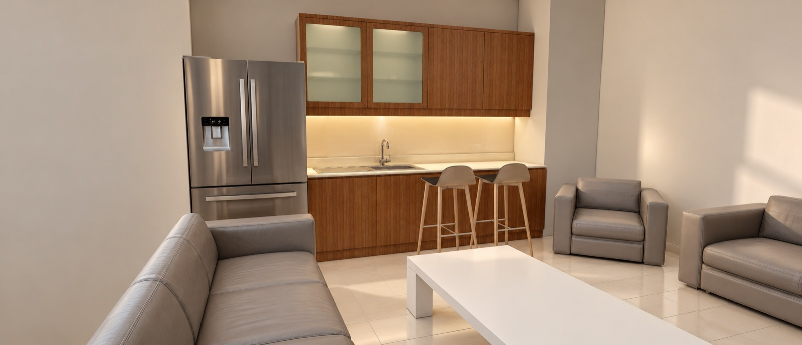
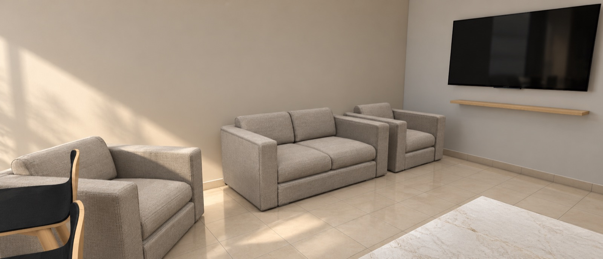
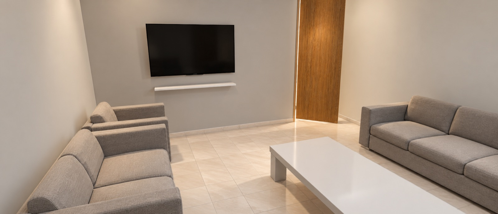
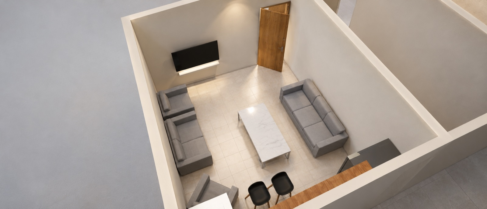
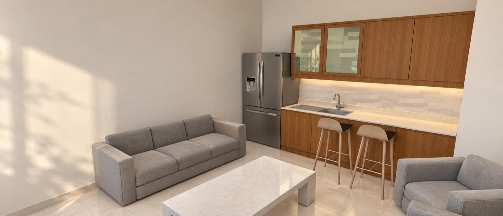
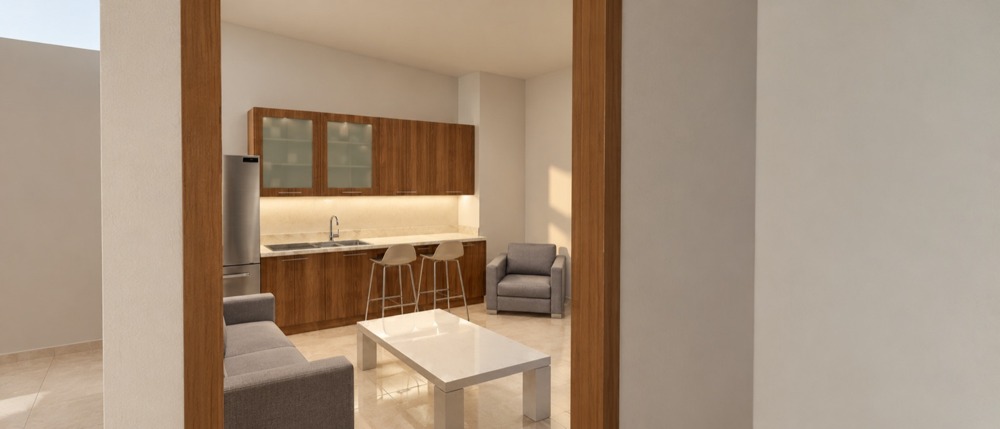
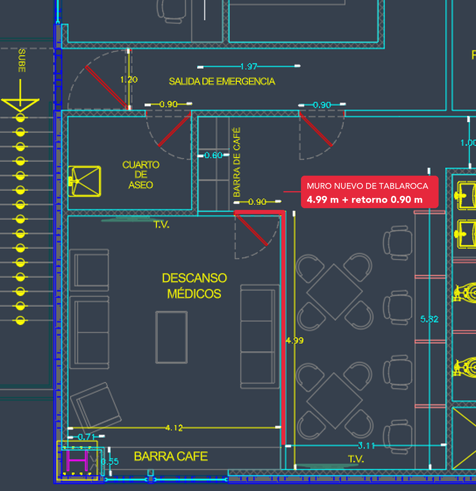

Entra a cada vista del proyecto con el scroll. En cada una verás los datos del área y, al final, el presupuesto de todo lo que se va a hacer.
| Partida | Área | Importe (MXN) |
|---|---|---|
| Muro divisorio de tablarocaMateriales $5,503 + mano de obra $3,500 + pintura $1,200 | Muros | $10,203 |
| Canal de amarre 6.35 cm (5 pzas)Sin precio en Home Depot | Muros | Por cotizar |
| Tornillos metal-metal y taquetesSin precio confirmado | Muros | Por cotizar |
| Refrigerador French door gris | Barra y cocina | Por cotizar |
| Gabinetes superiores con vitrinas y bajos | Barra y cocina | Por cotizar |
| Cubierta color crema con fregadero doble y llave | Barra y cocina | Por cotizar |
| 2 bancos altos de barra | Barra y cocina | Por cotizar |
| Sofá de 3 plazas | Zona de estar | Por cotizar |
| Sofá de 2 plazas | Zona de estar | Por cotizar |
| 2 sillones individuales | Zona de estar | Por cotizar |
| Mesa de centro rectangular | Zona de estar | Por cotizar |
| Segunda etiqueta "Barra de café" 0.60 mPendiente de confirmar en el plano | Muros | Por confirmar |
| Total cotizado a la fecha | $10,203 + 10 partidas por cotizar y 1 por confirmar | |
Solo el muro tiene cotización formal. El resto de las partidas se cotiza por separado; no se incluye un monto estimado. El muro no incluye canales, tornillos metal-metal, taquetes ni transporte. El piso cerámico y la puerta de madera ya existen, así que no se incluyen en el presupuesto.








En rojo, el muro de tablaroca que se va a instalar: unos 4.99 m a lo largo del lado oriente del descanso médicos, con un retorno de 0.90 m junto a la puerta.
